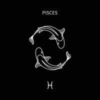
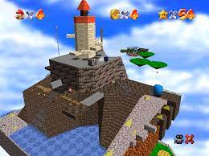
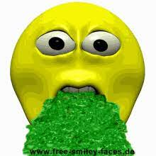

Extra information about me!
This page goes over some frequently asked questions! (FAQ)
How old are you?
I am 15 years old, and my birthday is March 12th, 1981. I am a Pisces.

What is your favorite game of all time? Why?
My favorite game is Super Mario 64. The levels are so unique and there's so much to do, and you can grab any star you want in the level you're in. My favorite level is Whomp's Fortress because it's fun to traverse the mountain.

What's your favorite food? Why?
My favorite food is Kentucky Fried Chicken because of the eleven herbs and spices. You don't even know what's in it, so it's a tolal mystery! KFC chicken is totally rad, and I love it so much.

Thanks for reading! I hope you learned a fact or two. Bye!

 Home
Fun Facts
Info
Gallery
Links
Home
Fun Facts
Info
Gallery
Links